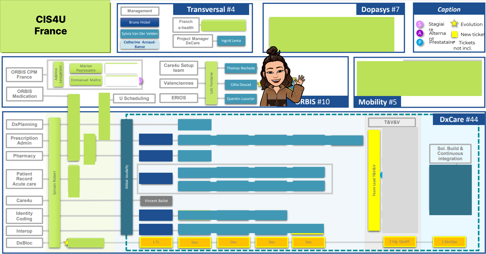
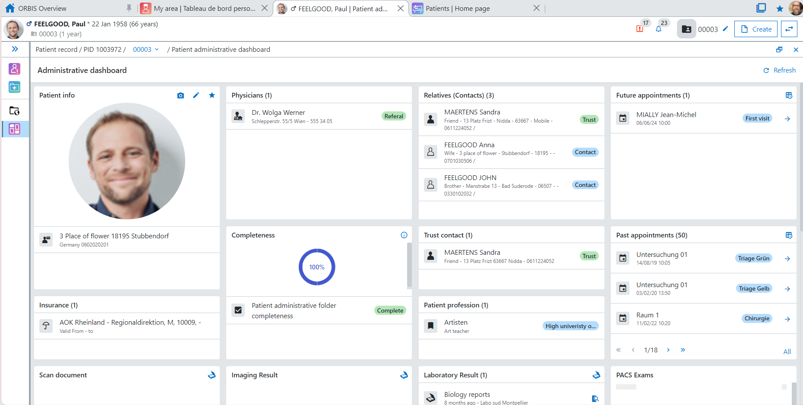

Mon stage chez Dedalus
Présentation de l'entreprise:
Dedalus Healthcare France est la branche Française de Dedalus Global. Cette entreprise basée au Plessis-Robinson pour ses quartiers à Paris, est spécalisée dans la conception et développement de logiciels de santé .Dedalus née à Florence en Italie en 1982 et devient vite leader en Italie des logiciels de santé.
Par son acquisition du groupe allemand AGFA-GEVAERT en 2020, puis du français DXC Technologiesen 2021, Dedalus devient leader européen , et dans le top 3 mondial dans le secteur de l'informatique de santé.
Dedalus est présent dans 40 pays , touchant plus de 540 million de patients , dans plus de 6700 établissements de santé et 5700 laboratoires.
En France, les solutions Dedalus sont présentes dans 100% des GHT (Groupes hôspitaliers universitaires).
Les solutions proposées par Dedalus vont du logiciel d'aide au diagnostic , au logiciel de billing , des solutions d'imagerie aux Dossiers Patients Informatisés.

Mon stage :
Durant mon stage de première année, entre le 1er et le 30 juin 2023, j'ai travaillé en R&D, dans l'équipe de développement de Care4U . Care4U est le tout nouveau DPI de Dedalus, développé en full web. Totalement responsive (disponible sur Bureau, tablette et smartphone), plus souple et personnalisable par les utilisateurs, c'est un DPI Complet avec des modules de gestion des RDV, de diagnostic, une gestion de la pharmacie et des urgences, mais aussi de l'EHPAD. Notre équipe était chargée de créer des exemples de formulaires et dashboards pour un hôpital pilote Care4U en France. Pendant un mois, avec le reste de l'équipe : Product Owner, Product Manager, UXDesigner et un autre développeur, nous avons réalisé, pour les services Urgences et Psychiatrie, des formulaires U (formulaires crées à partir de composer U, intégré à Care4U), ainsi que des Dashboards Patients. Cette création passait par les étapes suivantes:
- Recueil des besoins clients lors de réunions de clubs utilisateurs
- Création de maquettes Figma à partir des besoins exprimés
- Rédaction des requêtes SQL permettant de remonter les informations patients pertinentes
- Implémentation, en JavaScript des formulaires dans le composer U
- Publication des formulaires pour qu'ils soient visibles au utilisateurs selon leurs accréditations

Mon attestation de stage